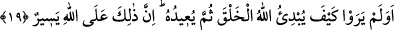
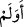
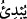
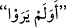
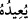
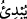

Fânî ve geçici bir rahat için bâkî ve kalıcı olan hayatı verme
Çekeceğin birkaç günlük sıkıntı ile ebedî üzüntüden kurtul!
19. Allah’ın, yaratılanı ilk baştan nasıl yarattığını, (ölümden) sonra bunu (nasıl)
tekrarladığını görmediler mi? Şüphesiz bu, Allah’a göre kolaydır.
“Allah’ın, yaratılanı ilk baştan nasıl yarattığını, ... görmediler mi?”
Bu âyet-i kerime, İbrâhim (a.s.) kıssasının iki tarafı arasına girmiş bir mu’teriza
cümlesidir. Amaç Mekke halkına hatırlatmak ve apaçık delil varken öldükten sonra
dirilmeyi (ba‘s) yalanlamalarını reddetmektir. “
” kelimesinin başındaki hemze,
hemze-i inkârî’dir. Yâni onların öldükten sonra dirilmeyi itiraflarını gerektiren ilk
yaratılışı görmediklerini red ve inkâr içindir. Vav, mukadder bir cümleye atıf içindir.
Mahlûkâtın yaratılışı (ibdâ’ı); yokluktan varlığa, sonra da gaybî varlıktan aynî varlığa
çıkarılmasıdır.
İmam Gazâlî (r.h.) der ki: Yaratmanın (îcâd) daha önce benzeri geçmemişse, buna
“ibdâ” denir. Benzeri geçmişse, buna da “iâde” denir. Allah Teâlâ, insanı ilk olarak
yarattı, sonra da onu iâde edecek, yâni tekrar döndürecek, yokluktan varlığa çevirecek
ve onları toplayacaktır. Bütün her şey O’ndan zuhûr etti ve yine O’na iâde olunacaktır.
Âyetin mânâsı şudur: Mekkeliler ve Kureyş kâfirleri bakmadılar mı? Allah’ın,
mahlûkatı, maddeli ve maddesiz olarak nasıl yarattığını açık ve zâhir bir görüşle,
herkesçe malûm ve cârî bir bilgi ile bilmediler ve görmediler mi? Yâni bildiler ve
gördüler, demektir.
Sonra Allah Teâlâ’ın “(ölümden) sonra bunu (nasıl) tekrarladığını” yâni iâde edip
tekrar varlık sahnesine çıkardığını “görmediler mi?”
Bu cümle “
” üzerine değil de
ile başlayan cümle üzerine matuftur. Çünkü
“
” kelimesinde görme vukû bulmamıştır. Burada Allah Teâlâ, mahlûkâtı ilk defa
yaratmaya (ibdâ) kıyas ederek tekrar iâde edeceğini haber vermektedir.
Bu cümlenin “
” cümlesi üzerine atfedilmesi de câiz görülmüştür. Ancak bu,
“tekrarlama”nın “inşâ” mânâsına te’vili suretiyledir. (Lûgatte “iâde”, geri döndürmek,
meydana getirmek, tekrar getirmek; “inşâ” ise yetiştirmek, çıkarmak, yaptırmak,
meydana getirmek anlamlarına gelir.) Bu tıpkı, Allah Teâlâ’nın geçmiş senede inşâ edip
bitirdiği, çıkardığı veya yetiştirdiği) bitki, ot, meyva ve diğer şeyleri her yıl tekrar inşâ
etmesine benzer. Çünkü bu, öldükten sonra dirilmenin hakîkatına ve vukûuna delâlet
eden en açık delillerden sayılmıştır.